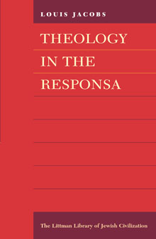

Theology in the Reponsa
Responsa are replies given by prominent rabbinic authorities to questions put to them by other scholars, asking for rulings on specific issues, generally of a practical nature. The responsa literature is thus a repository of the learning and sound sense of some of the greatest rabbinic authorities over a period of more than a thousand years down to the present, and relates to all the countries where Jews have lived. Although most of the emphasis in the responsa literature is undoubtedly on practice, nearly all the great compilations of responsa also contain discussions of a theological nature since changing conditions posed problems for belief as well as practice.
In this volume, first published in 1975 and unrivalled in its treatment of the subject, Louis Jacobs examines those responsa in which theology is considered and highlights the changes that have occurred in the theological principles affecting the rabbis' attitudes to such questions as life after death, reward and punishment, and the problem of suffering.
About the author
Louis Jacobs, founding rabbi of the New London Synagogue, is a renowned scholar with an international reputation as a lecturer. He is the author of The Jewish Religion: A Companion (1995) and of many other distinguished books, several of them published by the Littman Library, including Beyond Reasonable Doubt (1999, paperback 2004), A Tree of Life (second edition 2000) and Hasidic Prayer (paperback 1993), as well as an edition and translation of Zevi Hirsch Eichenstein¹s Turn Aside from Evil and Do Good (1995).
Contents
Preface
- The Goanic Period (to 1050)
- The Eleventh Century
Gershom of Mainz • Rashi and his school • Tosafists - The Twelfth Century
Joseph Ibn Migash • Joseph Ibn Plat • Abraham b. Isaac of Narbonne •
Maimonides • Abraham Ibn David of Posquières - The Thirteenth Century
Nahmanides • Abraham Maimoni • Meir b. Baruch of Rothenburg • Isaac b. Moses of Vienna and his son • Solomon Ibn Adret - The Fourteenth Century
Asher b. Jehiel • Isaac b. Sheshet Perfet - The Fifteenth Century
Simeon b. Zemah Duran • Solomon b. Simeon Duran • Jacob Weil •Israel Isserlein • Elijah Mizrahi - The Sixteenth Century
David Ibn Abi Zimra • Moses Alashkar •Benjamin Zeev of Arta • Samuel di Medina • Solomon Luria • Moses Isserles • Levi Ibn Habib • Menahem Aazariah da Fano - The Seventeenth Century
Joseph Trani • Joel Sirkes • Meir of Lublin • Leon da Modena • Jair Hayyim Bacharach • Zevi Ashkenazi - The Eighteenth Century
Jacob Emden • Ezekiel Landau • Jseph Ergas • Meir Eisenstadt • Jacob Reischer • Samson Morpurgo • Jacob Popers • Judah Ayash • Aryeh Laib Breslau - The Nineteenth Century
Eleazar Fleckeles • Hayyim Kittsee • Moses Sofer • Abraham Samuel Benjamin Wolf Sofer • Simhah Bunem Sofer • Samuel Ehrenfeld • Moses Schick • Hayyim Halberstam • Joel Ungar • Jacob Ettlinger • Zevi Hirsch Chajes • Joseph Saul Nathanson • Naphtali Zevi Judah Berlin • Jacob Saul Elyashar • Joseph Hayyim of Baghdad • Jacob Tennenbaum • Abraham Anakawa • Hayyim Sofer • Marcus Horowitz • Abraham Bornstein • Judah Aszod • Abraham Palaggi • Solomon Kluger - The Twentieth Century
Hayyim Eleazar Spira • Hayyim Isaac Jeruchem • Judah Grünwald • Joseph Rozin • David Hoffman • Amram Grünwald • Menahem Manish Babad • Abraham Menahem Steinberg • Hayyim Mordecai Roller • Judah Laib Zirelson •Mordecai Joseph Breisch • Jehiel Jacob Weinberg • Eliezer Waldenberg • Isaac Jacob Weiss • Moses Feinstein • Ben Zion Uziel • Zevi Ezekiel Michaelson • Abraham Isaac Kook - Summary and Conclusions
Appendix I: Saul Berlin and the ‘Besamim Rosh'
Appendix II: Isaac Lampronti's ‘Pahad Yitzhak'
Bibliography
Index

390 pages
ISBN: 978-1-904113-27-0
£18.95 / $29.95
Publication March 2005